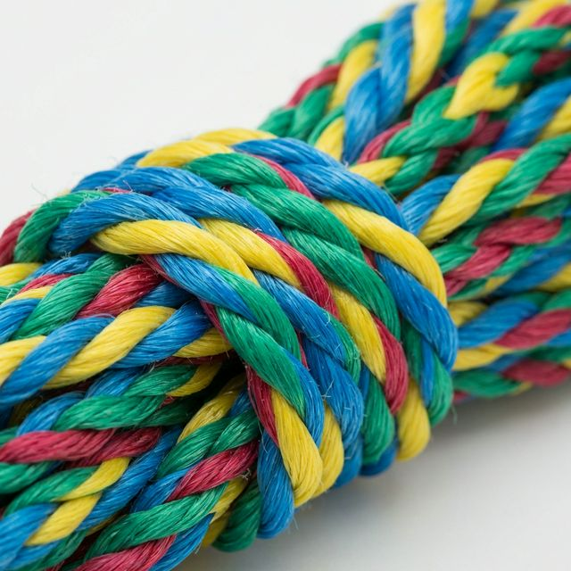

Polietileno torcida 100% virgem, azul. Flutuante e resistente à água salgada. A escolha número 1 para pesca artesanal e industrial, náutico e aquicultura.
CORDA TORCIDA POLIETILENO 100% VIRGEM AZUL
CORDA TORCIDA POLIETILENO – PESCA AZUL
ESCURO
A Corda Torcida Polietileno Azul Riomar é fabricada com polietileno 100% virgem, em construção torcida de 3 cordões, com acabamento azul vibrante que facilita a identificação no mar e nas redes de pesca.
Sua característica mais marcante é a flutuabilidade — ela não afunda na água — combinada com excelente resistência à corrosão por água salgada e exposição solar. Disponível na cor Azul (pesca em geral) e Azul Escuro (pesca profissional).

| Bitola | Emb. | Carga Ruptura (N) |
|---|---|---|
| 03 mm | Rolo | 53 |
| 04 mm | Rolo | 76 |
| 06 mm | Rolo | 203,25 |
| 08 mm | Rolo | 330,75 |
| 10 mm | Rolo | 545,63 |
| 12 mm | Rolo | 540 |
Cores: Azul | Azul Escuro (Pesca)
Entre em contato com nosso representante e receba uma proposta personalizada.